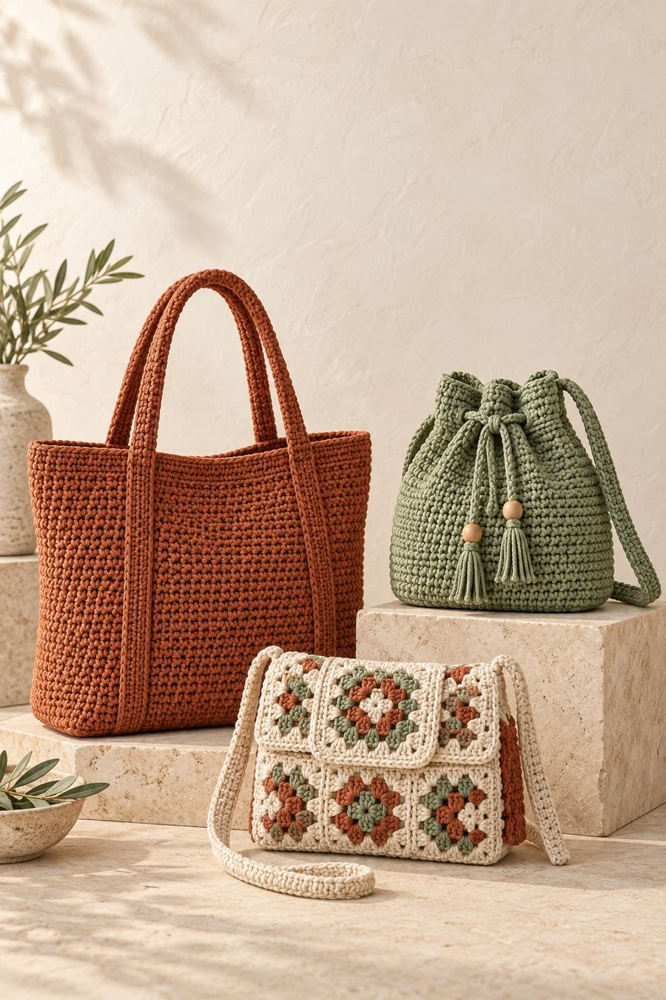
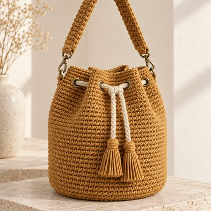
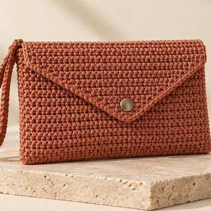
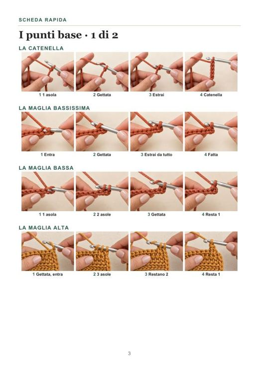
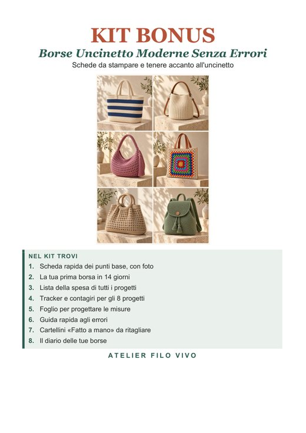
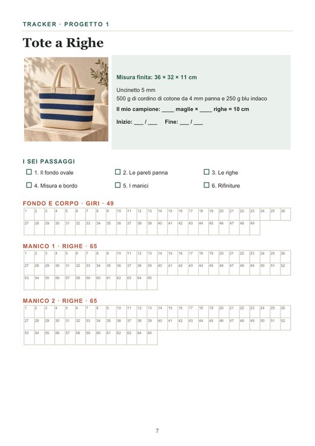

Qui trovi tutto quello che accompagna il libro: il kit da stampare, i video dei punti base e 300 idee per la tua prossima borsa.



19 pagine: punti base, contagiri, lista della spesa, cartellini.
Scopri il kit → Bonus 2Brevi video passo passo da guardare sul telefono mentre lavori.
Guarda i video → Bonus 3Varianti di colori, materiali e dettagli dagli 8 progetti del libro.
Sfoglia le idee →Tieni la scheda dei punti e il contagiri del tuo progetto accanto all'uncinetto.
Ogni pagina dei punti base del libro ha un QR: inquadralo e il video si apre qui.
Finita la prima borsa, scegli un'idea tra le 300 e cambia un solo elemento.



Tutto quello che ti serve accanto all'uncinetto, dalla prima catenella alla borsa finita.
Consiglio: stampa al 100% (dimensione reale). Per i cartellini usa un cartoncino.
Da 1 a 2 minuti ciascuno, senza audio: mani vere al lavoro, rallentatore sui gesti chiave e i passaggi in italiano. Tocca un video per aprirlo in grande.
Ogni idea parte da uno degli 8 progetti del libro e cambia colori, filato e una sola cosa alla volta. La foto mostra la borsa nel colore principale della palette. Se cambi filato, rifai il campione e adatta l'uncinetto.
Se il libro e i bonus ti hanno aiutata a finire la tua borsa, lascia una recensione onesta su Amazon: aiuta altre principianti a scegliere e aiuta noi a migliorare le prossime edizioni.
Torna all'inizio